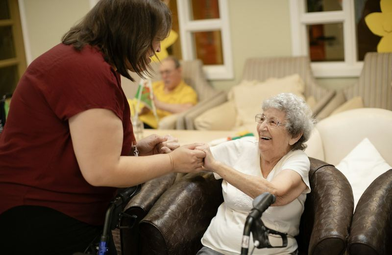
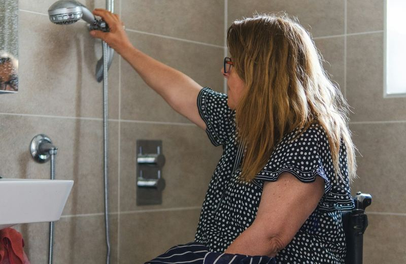
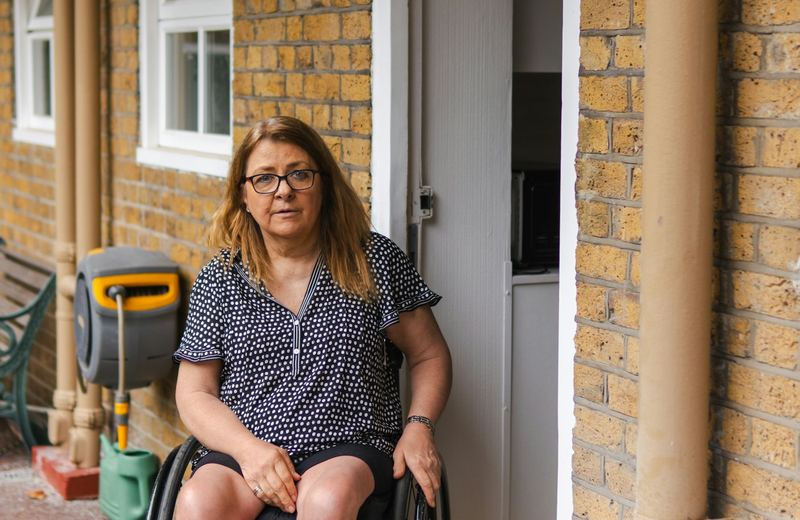
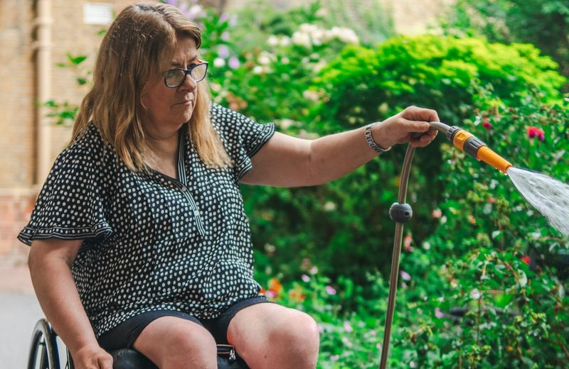
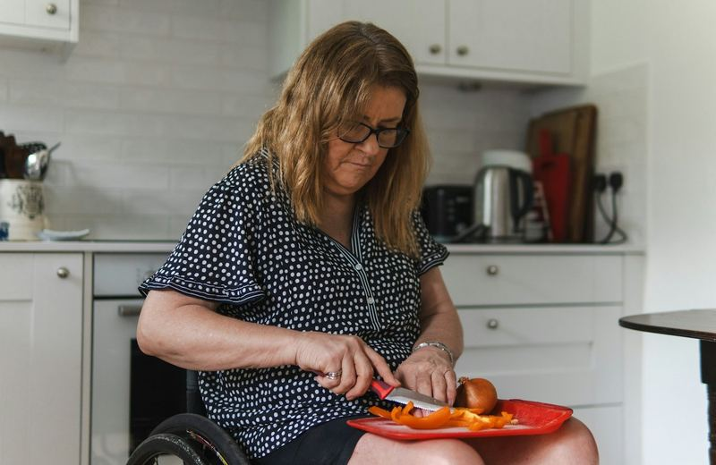

Aide humaine
Quantification heure par heure du besoin en tierce personne, actif ou de surveillance, professionnel ou familial.
En savoir plus : Aide humaineJ'évalue, chez vous et dans vos lieux de vie, les conséquences concrètes de vos séquelles : aide humaine, aides techniques, logement, véhicule. Un rapport précis et argumenté, pour une indemnisation qui correspond à votre réalité.
Fabien LefrancErgothérapeute D.E. depuis 1997 — DU Réparation juridique du dommage corporel (Université de Poitiers, 2026-2027)
L'ergothérapeute apporte un regard fonctionnel et concret. Il complète l'expertise médicale en montrant ce que les séquelles changent réellement dans la vie quotidienne.
Lors d'une expertise, quelques heures dans un cabinet médical ne suffisent pas à montrer ce que vous vivez chaque jour. Je viens chez vous, je vous observe dans vos activités et je traduis vos difficultés en besoins précis et chiffrables.
Idéalement avant l'expertise médicale (amiable ou judiciaire), pour que les besoins soient documentés en amont. Mais il n'est jamais trop tard pour en parler.
Questions fréquentesMon rapport est construit pour être exploité dans la procédure : description de la situation de handicap, semaine type heure par heure, préconisations argumentées et devis à l'appui. Il nourrit directement vos demandes au titre de la nomenclature Dintilhac.
Rapport écrit, illustré et sourcé, remis dans des délais compatibles avec le calendrier de l'expertise. Présence possible lors de la réunion d'expertise.
Voir ma démarcheÀ la demande d'un médecin expert ou d'un médecin-conseil de victime, j'apporte un avis technique sur les besoins de compensation : évaluation écologique fondée sur la CIF (Classification internationale du fonctionnement), mises en situation et analyse de l'environnement.
Mon rôle est de décrire objectivement la situation et les besoins, avec rigueur et sans parti pris.
Mission de sapiteurAccident de la route, erreur médicale, accident de la vie, agression, accident du travail : quelle que soit l'origine du dommage, les besoins de compensation s'évaluent dans la vraie vie.

Quantification heure par heure du besoin en tierce personne, actif ou de surveillance, professionnel ou familial.
En savoir plus : Aide humaine
Fauteuil roulant, lit médicalisé, aides à la toilette, domotique : essais, préconisations et coûts de renouvellement.
En savoir plus : Aides techniques
Analyse de l'accessibilité et préconisations d'aménagement, en lien avec des artisans et un architecte si nécessaire.
En savoir plus : Logement adapté
Besoins d'adaptation pour conduire ou être transporté, surcoûts et renouvellement du véhicule.
En savoir plus : Véhicule adapté
Activités perdues ou limitées, pour étayer le préjudice d'agrément et la participation sociale.
En savoir plus : Loisirs & vie sociale
Toilette, repas, entretien du logement, courses : chaque activité est observée en situation réelle.
En savoir plus : Vie quotidienneUn accident de la circulation, une erreur médicale, une chute ou une agression peuvent bouleverser en quelques secondes l'autonomie d'une personne et l'équilibre de toute une famille.
La procédure d'indemnisation est longue et technique. Mon rôle est de vous aider à y faire reconnaître l'ensemble de vos besoins, en lien avec votre avocat et votre médecin-conseil.
L'expertise médicale décrit les lésions et les séquelles. L'ergothérapeute, lui, observe ce qu'elles empêchent de faire : se laver, cuisiner, se déplacer, s'occuper de ses enfants, travailler, sortir.
Cette évaluation écologique, réalisée dans le lieu de vie et en mise en situation, met en lumière des besoins souvent sous-estimés, notamment en aide humaine.
Besoin en tierce personne d'une même victime :
Appel gratuit pour comprendre la situation et l'étape de la procédure.
Proposition d'intervention écrite, avant tout engagement.
Entretien, observation et mises en situation dans vos lieux de vie.
Rapport détaillé, préconisations et chiffrages argumentés.
Présentation et défense des besoins lors de l'expertise si nécessaire.

Après près de vingt ans en milieu hospitalier et en rééducation fonctionnelle (Hôpital Percy (92), Hôpital Jean-Rostand (94), CSSR La Musse (27), CH d'Angoulême (16), CSSR Les Glamots (16)), puis cinq ans comme instructeur de locomotion auprès de personnes déficientes visuelles au Centre Régional Basse Vision de Poitiers - Antenne de Charente, j'accompagne depuis 2024 une cinquantaine de personnes à leur domicile au SAVS d'APF France handicap en Charente.
Créateur du site assistant-ergo.fr, plateforme d'aide au choix des fauteuils roulants née de la réforme de 2025, je connais finement le matériel (fauteuils roulants manuels ou électriques, scooters, etc.) et je travaille avec un large réseau de revendeurs et de fournisseurs médicaux.
J'ai suivi le DU Réparation juridique du dommage corporel à la Faculté de santé de Poitiers (décembre 2026 – mars 2027).
« Mon rôle : rendre visible ce que la victime vit, pour que la réparation soit à la hauteur de son quotidien. »
Un premier échange téléphonique, gratuit et sans engagement, permet de voir si mon intervention est utile et à quel moment de la procédure.